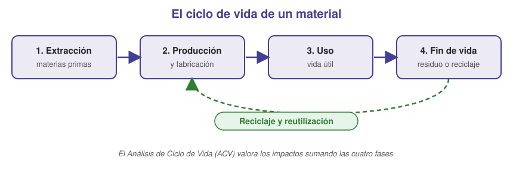

Sostenibilidad ecosocial en la ingeniería
Para qué sirve este apartado. Ya sabes caracterizar un material para ver si aguanta. Aquí aprenderás a valorar también qué cuesta al planeta y a las personas fabricarlo y usarlo. Lo necesitas para la cuestión de sostenibilidad del examen y para el informe de impacto.
Una ingeniería responsable no busca solo que algo funcione, sino que funcione minimizando el daño ambiental y social. A esto lo llamamos sostenibilidad ecosocial.
En esta unidad se relaciona con dos Objetivos de Desarrollo Sostenible:
- ODS 9 — industria e infraestructuras sostenibles.
- ODS 12 — producción y consumo responsables.
El ciclo de vida de un material (ACV)
Para valorar un material hay que seguirlo de la cuna a la tumba, no solo en la fábrica. Pasa por cuatro fases y cada una genera impacto:

- Extracción: minería o tala de materias primas (bauxita, mineral de hierro…).
- Producción: fabricar el material y la pieza; suele ser la fase de más energía y emisiones.
- Uso: lo que consume durante su vida útil (una pieza ligera ahorra combustible).
- Fin de vida: reciclaje, reutilización o vertedero.
Sumar el impacto de las cuatro fases es lo que se llama Análisis de Ciclo de Vida (ACV).
Indicadores de impacto ambiental y social
Para comparar materiales o procesos con objetividad se usan indicadores:
| Indicador | Qué mide | Unidad |
|---|---|---|
| Energía embebida | Energía para producir 1 kg de material | MJ/kg |
| Huella de carbono | Gases de efecto invernadero | kg CO₂/kg |
| Agua | Agua dulce empleada | L/kg |
| Recursos | Materia prima abundante o crítica | cualitativo |
| Residuos | Cantidad y toxicidad | cualitativo |
| Reciclabilidad | Facilidad de recuperar el material | % reciclable |
Regla práctica: un material es mejor cuanto menos energía, CO₂, agua, recursos escasos y residuos tóxicos implica, y cuanto más reciclable es.
Junto al impacto ambiental está el impacto social: seguridad y salud laboral, condiciones de extracción (minerales en conflicto), salud de la población cercana y dependencia de recursos críticos.
Sostenibilidad en la selección de materiales y en los procesos
Al elegir un material, junto a las propiedades mecánicas, valora:
- Reciclado o reciclable, mejor que de primera obtención.
- Materia prima abundante, mejor que escasa o crítica.
- Baja energía embebida y baja huella de carbono.
- Durable y ligero.
- Sin sustancias tóxicas ni difíciles de separar al final.
Estos criterios suelen chocar con el coste o las prestaciones: la decisión es un compromiso razonado.
El proceso de fabricación también pesa: la fundición y el trabajo en caliente gastan mucha energía; el mecanizado genera viruta; los tratamientos térmicos añaden consumo y a veces residuos peligrosos. Se mejora aprovechando el material, recuperando calor y reutilizando la chatarra.
Cómo elaborar un informe de impacto y sostenibilidad
El informe valora dos cosas a la vez: si el material es idóneo para una pieza y qué impacto ambiental tiene fabricarlo. Un informe sencillo tiene seis apartados:
- Objeto — el material elegido y la pieza o aplicación.
- Idoneidad técnica — las propiedades (mecánicas, densidad, durabilidad, corrosión…) que lo hacen apto para esa función.
- Alternativa(s) — otro material, comparado propiedad a propiedad.
- Impacto ambiental por fase del ciclo de vida — extracción, producción, uso y fin de vida.
- Medidas de mitigación — cómo reducir los impactos detectados.
- Veredicto razonado — qué material recomiendas, ponderando idoneidad y sostenibilidad.
Guion mínimo: Objeto → Idoneidad técnica → Alternativas → Impacto por fase → Medidas → Veredicto.
Ejemplo de informe de impacto y sostenibilidad
Así quedaría un informe sencillo ya redactado, con los seis apartados. Fíjate en la extensión: breve y al grano.
INFORME DE IMPACTO Y SOSTENIBILIDAD
Material para un soporte estructural ligero
1. Objeto. Elegir el material de un soporte estructural que debe ser ligero, valorando su idoneidad técnica y su impacto ambiental.
2. Idoneidad técnica. Se propone aluminio: baja densidad (ligereza), buena relación resistencia/peso, resistencia a la corrosión y ductilidad suficiente. Cumple los requisitos mecánicos del soporte.
3. Alternativa: acero.
| Propiedad | Aluminio | Acero |
|---|---|---|
| Densidad | ~2,7 g/cm³ (ligero) | ~7,8 g/cm³ (pesado) |
| Resistencia | Media-alta | Alta |
| Rigidez (módulo E) | Menor | Mayor |
| Corrosión | Muy resistente | Requiere protección |
El acero es más resistente y rígido, pero mucho más pesado. Como aquí prima la ligereza, el aluminio es preferible técnicamente.
4. Impacto ambiental por fase. Se compara el aluminio de primera fusión con el reciclado:
| Fase | Aluminio 1ª fusión | Aluminio reciclado |
|---|---|---|
| Extracción | Minería de bauxita | Sin nueva minería |
| Producción | Energía muy alta (electrólisis) | ~5 % de esa energía |
| Uso | Igual (pieza ligera → ahorro) | Igual |
| Fin de vida | Reciclable | Reciclable; ya parte de chatarra |
5. Medidas de mitigación. Usar aluminio reciclado, recuperar el calor del proceso, reutilizar las escorias y alargar la vida útil de la pieza.
6. Veredicto razonado. Se recomienda aluminio (idóneo por su ligereza) y, dentro del aluminio, reciclado: misma prestación con mucho menos consumo, emisiones y residuos. Se asume su menor rigidez frente al acero porque la aplicación prioriza el peso.
Ni en el examen ni en tu informe hace falta más extensión que esta: lo importante es recorrer los seis apartados y justificar el veredicto.
Tarea: elabora tu informe de impacto y sostenibilidad
Tu tarea. Elabora un informe de impacto y sostenibilidad de un material (trabajo individual, 1–2 páginas), con los seis apartados que has visto.
Usa la plantilla: haz tu propia copia desde este enlace y complétala.
▶ Copiar la plantilla del informe
Recorre los seis apartados: Objeto · Idoneidad técnica · Alternativa(s) · Impacto por fase del ciclo de vida · Medidas de mitigación · Veredicto razonado. Apóyate en el ejemplo de arriba.
Entrega: exporta el informe a PDF y súbelo a Moodle.
Se valorará: que justifiques la idoneidad técnica, que recorras el ciclo de vida al analizar el impacto, que compares con una alternativa, que propongas medidas y que razones el veredicto (no basta con elegir).